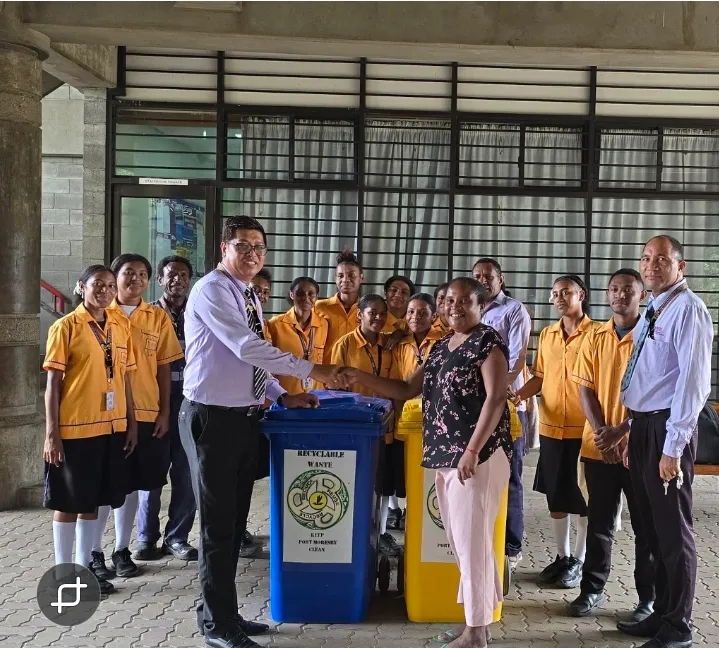

Student Engagement
Student engagement at our school is the heartbeat of our institutional culture. It transcends the classroom and manifests in projects, service, celebration, and discovery. Every activity is designed to challenge, inspire, and transform to help students find purpose beyond grades and realize their potential as active, engaged citizens.

School Projects
From engineering builds to research investigations, students transform ideas into reality. These projects are not just assignments, they are proof of thought, discipline, and innovation in motion.

Class Activities
Learning becomes alive through discussion, collaboration, and challenge. Students engage actively, shaping their understanding through interaction, not memorization.

Community Service
Service extends beyond obligation. It builds humility, awareness, and responsibility, shaping students into individuals who contribute, not just succeed.

30 Year Anniversary
Students and staff celebrated the school's 30 year anniversary with pride, performances, and reflection. The event honored the journey of learning, community, and achievement that has shaped the school.
 1.webp)
CEPA Excursion
At the Conservation and Environment Protection Authority, students experienced environmental responsibility firsthand, where theory met real-world urgency.
Student Voices
"The projects we do here actually make you think. It’s not just about passing, it’s about understanding."
Student, STEM Stream
"Community service changed how I see people. It made me realise that what we learn should help others too."
Student Leader
"The PNG 50 event made me proud to be part of something bigger than just school."